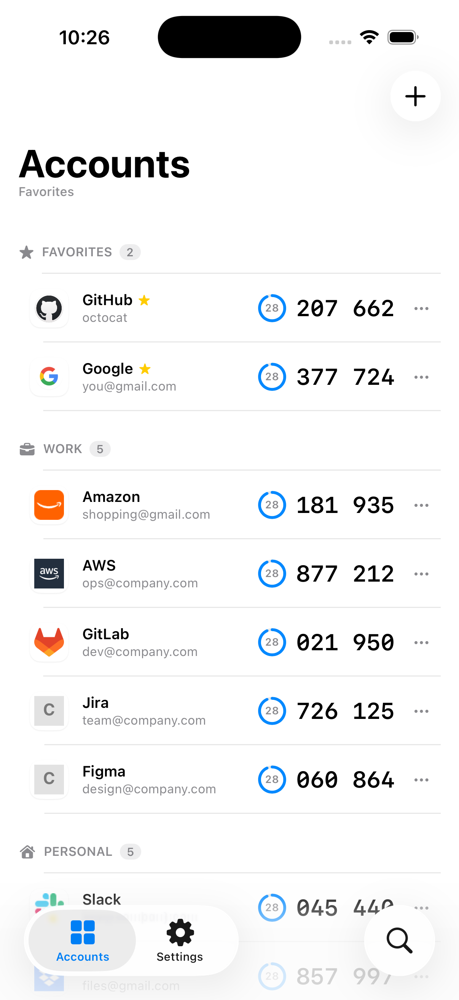
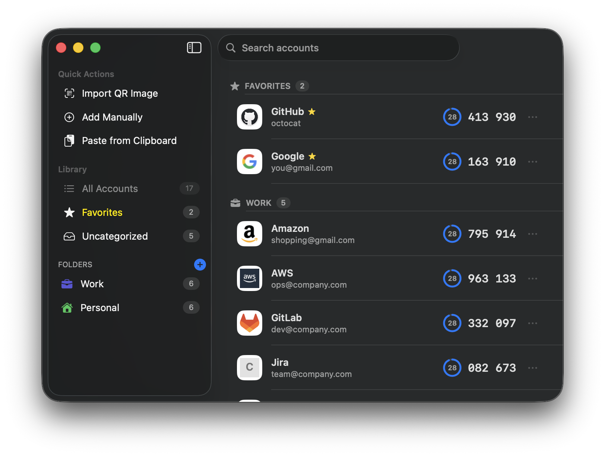

Two-factor, the fast way
A fast, private authenticator for iPhone, Mac, and Windows — codes on your home screen, one-tap copy, and end-to-end encrypted sync.
Free & open source · iOS 17+ / macOS 14+ / Windows 11

Real screens
No mockups and no cropped UI. These are full, unaltered OTPeek screens at their original proportions.
OTPeek for Mac
Favorites, folders, search, and quick actions — the full Mac app, shown exactly as it is.

Unlock, scroll, squint, tap. OTPeek puts your codes one glance away — without giving up an inch of security.
Home-screen and desktop widgets show live codes with a countdown — you rarely open the app at all.
Tap a code anywhere — the list, a widget, the menu bar, the system tray — and it's on your clipboard.
Secrets live in an AES-256-GCM vault behind your master password (Argon2id). Face ID / Touch ID lock built in.
iCloud sync between iPhone and Mac moves only the encrypted vault — codes never leave your device in the clear.
Real service logos, folders, favorites, and instant search keep even a large collection easy to scan.
iOS, macOS, and Windows share the same audited Rust engine — identical crypto and backup format, fully open source.
Every line is public and your data exports to an open, documented format any time. If OTPeek earns a place on your home screen, a star or a review means a lot.
Optional tips live inside the app — voluntary, and they never unlock features.